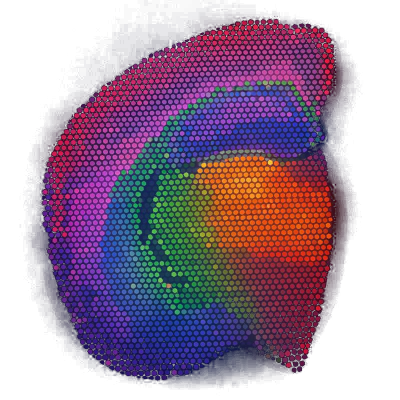
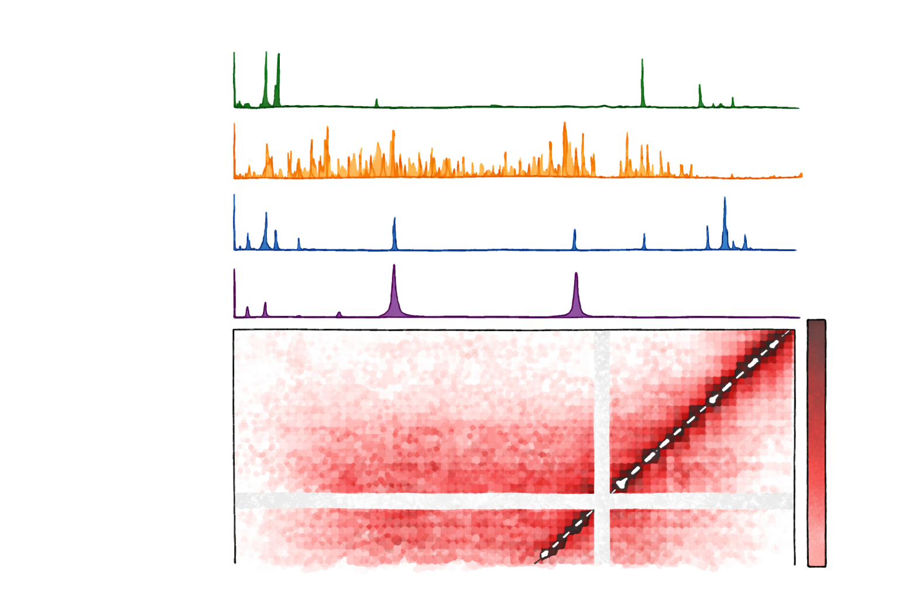

|
I decode biology with AI
About Me
I am a PhD Candidate in Computational Molecular Biology at Brown University, advised by Dr. Ritambhara Singh.
My research focuses on gene regulation using Graph Neural Networks and Optimal Transport.
Previously, I studied RNA secondary structures and satellite DNAs at the University of Rochester.
Outside the lab, I enjoy hiking, cooking, and learning about fish.
Education
PhD Candidate, Computational Biology
Brown University
B.S. Compuptational Biology '22
University of Rochester
Projects

DRIFT ↗
Diffusion-based Representation Integration for Foundation Models in Spatial Transcriptomics.
Odor-associated Learning and Memory ↗
Modeling gene regulatory mechanisms in olfactory cortex and hypothalamus under different odor conditions.

Synergistic Transcription Factor Control in Drosophila ↗
Multimodal modeling of Drosophila transcription factors involved in synapse formation and dosage compensation.
Publications and Preprints
- Colin D. Baker, Tuan M. Pham, Pinar Demetci, Quang-Huy Tran, Ievgen Redko, Bjorn Sandstede, and Ritambhara Singh SCOT+: A Comprehensive Software Suite for Single-Cell Alignment Using Optimal Transport. (2025) [Bioinformatics Advances]
- Sara Zeppilli, Alonso O. Gurrola, Pinar Demetci, David H. Brann, Tuan M. Pham, Robin Attey, Noga Zilkha, et al. Single-cell genomics of the mouse olfactory cortex reveals contrasts with neocortex and ancestral signatures of cell type evolution. (2025) [Nature Neuroscience]
- Pham, Tuan M., Terrel Miffin, Hongying Sun, Kenneth K. Sharp, Xiaoyu Wang, Mingyi Zhu, Shuichi Hoshika, Raymond J. Peterson, Steven A. Benner, Jason D. Kahn, and David H. Mathews DNA Structure Design Is Improved Using an Artificially Expanded Alphabet of Base Pairs Including Loop and Mismatch Thermodynamic Parameters. (2023) [ACS Synthetic Biology]
- James A Kentro, Gunjan Singh,Tuan M Pham , Justin Currie, Saniya Khullar, Audrey T Medeiros, Maria Tsiarli, Erica Larschan, Kate M O’Connor-Giles Conserved transcription factors coordinate synaptic gene expression through repression. (2025) [bioRxiv]
- Atishay Jain, Tuan M. Pham, David H. Laidlaw, Ying Ma, Ritambhara Singh Diffusion-based Representation Integration for Foundation Models Improves Spatial Transcriptomics Analysis. (2025) [bioRxiv]